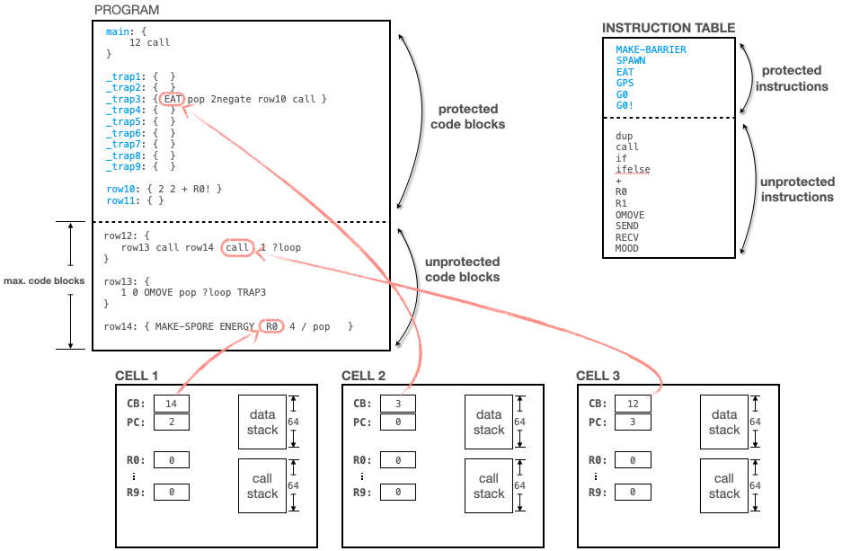

VOLVE 5.0
VOLVE 5.0
Cell CPU Architecture
This page will describe in detail the computer architecture behind the CELL.
Table of Contents:
- CPU
- RAM
- Protections
- Protected Code Blocks
- Protected Instructions
- Maximum Code Blocks
- Traps
- Trap Safety
- Interrupts
- Strains and Modes
This diagram shows three cells which are all part of the same organism. Each cell is executing a different part of the kforth program. This page will explain the CPU architecture
CPU
The cell is the thing that contains the central processing unit which is running the KFORTH program. The cell is the analog to a process and cpu core in an operating system. A cell is given an execution time slice along with the other cells. Cells execute in a round robin order (See the simulation page).
The CPU is a 16-bit architecture. All values are 16-bit signed integers. Each cell has a bank of 10 registers (R0 .. R9). Each cell has a data stack, which has 64 elements. And a call stack of 64 elements. The call stack is how a program calls subroutines.
RAM
This architecture has 256MB of random access memory. Each code block can be treated as an array of 15-bit numbers, which can be read and written. See the instructions NUMBER and OPCODE. The weird thing about this architecture is that the RAM store consists of 15-bit signed integers. This is because the same RAM storage is used for the instructions (this requires using a bit from the 16-bit integers).
There are a maximum of 16,386 code blocks. The maximum length of a code block is 16,386. This is where the 256MB figure was arrived at. Memory is accessed via two addresses: a code block and an offset into the code block.
{
row15 3 NUMBER ; read item 3 from row15 which is 31
123 row15 5 NUMBER! ; write the value 123 to item 5, in row15.
}
row15: { 0 19 21 31 42 55 60 }
|
This storage is shared between all the cells in the organism. A test-and-set instruction is provided: ?NUMBER!. This allows cells to syncronize their access to RAM.
Protections
The blue code block labels indicate "protected code blocks". A protected code block will not mutate. Further more, there are restrictions on what unprotected code can do. For example, unprotected code cannot:
- Read or Write protected code blocks
- Call or jump to protected code blocks (must use TRAPs)
Protected Code Blocks
Protected code blocks do not mutate during replication. Also no information leaks out of a protected code blocks when mutating the unprotected code. Unprotected code cannot read or write protected RAM. Cell's running in unprotected code cannot call protected code (unless it is via the TRAPn instructions).
Protected Instructions
Protected instructions can be configured by the Protections tab of the strain settings dialog. A protected instruction will not be generated by the mutation algorithm. This gives the user the ability to customize the behavior of instructions.
Maximum Code Blocks
This value controls the number of un-protected code blocks that can be mutated into existence. You can set this value from the Mutations tab of the strain settings dialog.
Traps
A trap is an instruction which calls one of the special code block numbers. The special code blocks numbers are: 1, 2, 3, ..., 9. These numbers correspond to code block numbers 1,2,3, ...9. When unprotected code wants to call protected code, it would use a TRAP instruction. For example, the TRAP7 instruciton calls code block 7.
Trap Safety
Evolving code will call your trap handlers with all concievable arguments and states. You need to protect your trap handler so that you don't leak protected behavior to the evolving programs.
When unprotected code calls protected code, you need to be careful. The stacks may be in an unknown state. Traps will not be called unless there are at least 2 items remaining on the data stack. This permits these safety checks to be performed:
_trap7: {
DSLEN 60 > ?exit
CSLEN 60 > ?exit
DSLEN 3 < ?exit ; make sure three arguments provided
do_something call
}
|
This checks that there are enough call stack and data stack elements to perform the operation. If not, then exit. The third statement checks if there are the right number of arguments provided.
Interrupts
Some instructions can be configured to interupt the target cell. For example, the SEND instruction can interrupt the cell in which the SEND operation was applied to. An interrupt uses the trap code blocks. By setting bits in the SEND mode, it can be configured to trigger an interupt using the TRAP3 code block.
The cell that is interrupted will finds its flow of control transferred to the appropriate trap code block.
Strains and Modes
Each organism belongs to a strain. The simulator supports up to 8 strains (numbered 0 ... 7), in the same simulation. Each strain can be seperately configured. The following things can be configured:
- Mutation Rates
- Instruction Modes
- Protected Instructions
- Protected Codeblocks
- Initial Kforth Program
To re-use a strain between simulations, you use a Strain Profile. You give a name to your profile and use this to create new simulations.
Modes are on/off flags associated with each instruction. The behavior of instructions can be modified by setting the flags appropriately. See modes.